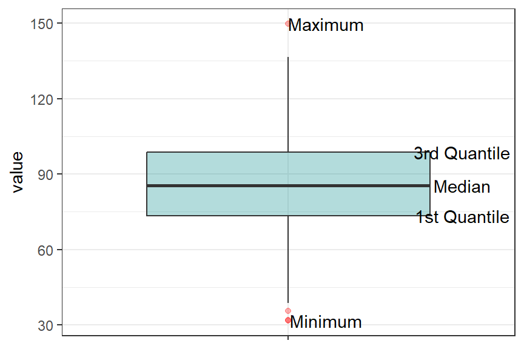
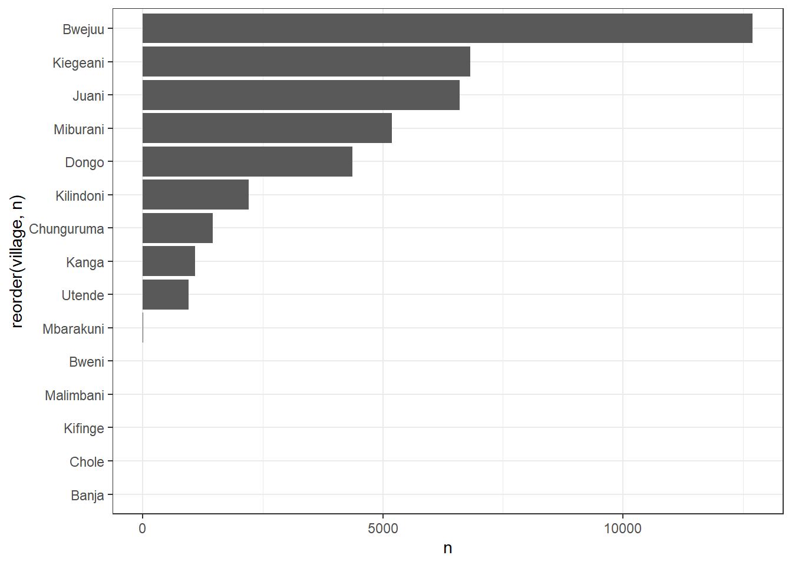
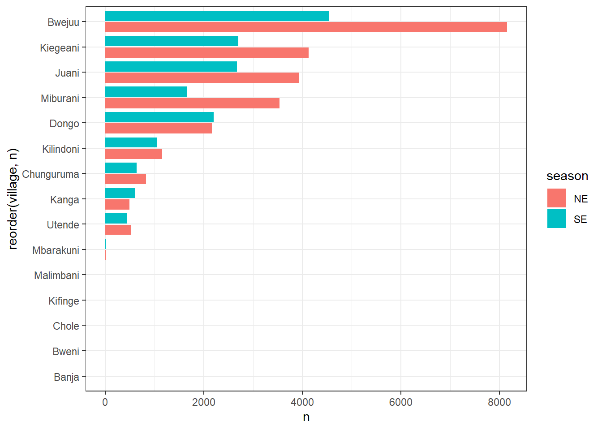
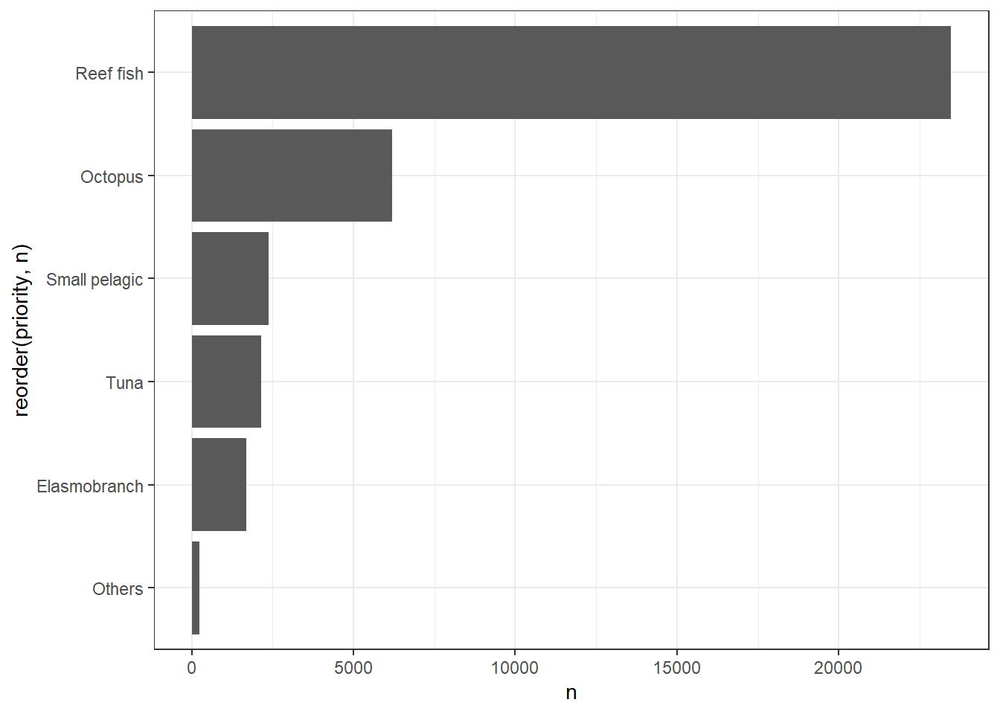
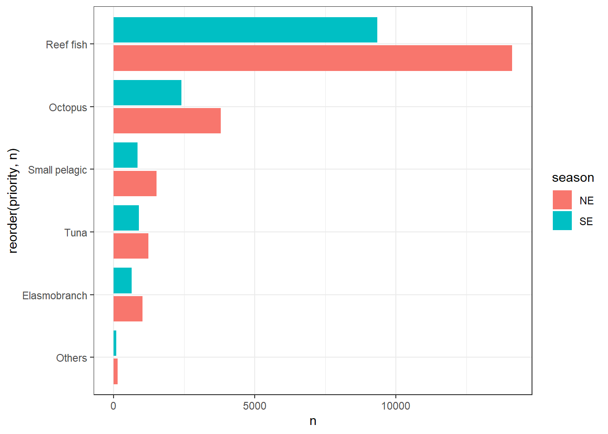

require(tidyverse)
require(magrittr)
theme_set(theme_bw(base_size = 11))7 Exploratory-Data-Analysis-EDA
7.1 What is EDA?
Exploratory Data Analysis (EDA) is a method for data analysis that employs visual methods. Using statistical summaries and graphical representations, it is used to identify trends, and patterns, or to test hypotheses.
Understanding the data first and attempting to glean as many insights from it as possible is a smart strategy. Before going hands-on with the data, EDA is all about making sense of it. The first step in using data is to EXPLORE it! This entails creating simple metrics and charts to determine what your data is telling you.
The data set used for this analysis was taken from Kaggle. The packages for exploratory data analysis used in this chapter are the packages dplyr (Wickham et al. 2018) and tidyr (Wickham and Henry 2018), and to visualize and explore the data: ggplot2 (Wickham 2016) and metR (Campitelli 2019).
The objective of this chapter is to analyze and identify trends and patterns of priority fisheries in Mafia Island, Tanzania and identify which priority fishery is performing well and which one are doing worse. To start with, we need to import the necessary libraries first and then loaded the data set.
Let’s load the CSV file using the read_csv function. We’ll use the name hotel_raw_df for the data frame to indicate this is unprocessed data that we might clean, filter, and modify to prepare a data frame ready for analysis.
mimp = read_csv("assets/mimp_cfma_priority.csv")Rows: 41404 Columns: 13
-- Column specification --------------------------------------------------------
Delimiter: ","
chr (6): district, village, landing, gear_type, order, priority
dbl (4): fishermen, weight, fish_number, fish_price
dttm (3): date, going_time, return_time
i Use `spec()` to retrieve the full column specification for this data.
i Specify the column types or set `show_col_types = FALSE` to quiet this message.mimp# A tibble: 41,404 x 13
district village landing date going_time
<chr> <chr> <chr> <dttm> <dttm>
1 Mafia Chunguruma Tumbuju 2009-09-14 00:00:00 1899-12-31 09:00:00
2 Mafia Chunguruma Tumbuju 2009-09-14 00:00:00 1899-12-31 09:00:00
3 Mafia Kiegeani Utende 2010-01-15 00:00:00 1899-12-31 08:30:00
4 Mafia Miburani Kitoni 2010-01-29 00:00:00 1899-12-31 10:00:00
5 Mafia Dongo Magemani 2009-06-17 00:00:00 1899-12-31 10:00:00
6 Mafia Chunguruma Tumbuju 2009-09-19 00:00:00 1899-12-31 12:00:00
7 Mafia Chunguruma Tumbuju 2009-09-19 00:00:00 1899-12-31 12:00:00
8 Mafia Bwejuu Bwejuu 2009-12-13 00:00:00 1899-12-31 00:00:00
9 Mafia Bwejuu Bwejuu 2009-12-13 00:00:00 1899-12-31 00:00:00
10 Mafia Bwejuu Bwejuu 2009-12-13 00:00:00 1899-12-31 00:00:00
# ... with 41,394 more rows, and 8 more variables: return_time <dttm>,
# fishermen <dbl>, gear_type <chr>, order <chr>, priority <chr>,
# weight <dbl>, fish_number <dbl>, fish_price <dbl>Let’s view some basic information about the data frame. We can achieve that with a glimpse function:
mimp %>%
glimpse()Rows: 41,404
Columns: 13
$ district <chr> "Mafia", "Mafia", "Mafia", "Mafia", "Mafia", "Mafia", "Maf~
$ village <chr> "Chunguruma", "Chunguruma", "Kiegeani", "Miburani", "Dongo~
$ landing <chr> "Tumbuju", "Tumbuju", "Utende", "Kitoni", "Magemani", "Tum~
$ date <dttm> 2009-09-14, 2009-09-14, 2010-01-15, 2010-01-29, 2009-06-1~
$ going_time <dttm> 1899-12-31 09:00:00, 1899-12-31 09:00:00, 1899-12-31 08:3~
$ return_time <dttm> 1899-12-31 15:00:00, 1899-12-31 15:00:00, 1899-12-31 13:0~
$ fishermen <dbl> 15, 15, 1, 1, 1, 18, 18, 1, 1, 1, 1, 1, 17, 17, 5, 6, 15, ~
$ gear_type <chr> "BEACH SEINE NETS", "BEACH SEINE NETS", "STICK/SPEAR", "ST~
$ order <chr> "DASYATIDAE", "LETHRINIDAE", "Octopus", "BELONIDAE", "SPHY~
$ priority <chr> "Elasmobranch", "Reef fish", "Octopus", "Small pelagic", "~
$ weight <dbl> 30.0, 20.0, 10.0, 7.0, 4.5, 30.0, 10.0, 9.0, 4.0, 6.0, 5.0~
$ fish_number <dbl> 10, 100, 12, 4, 4, 90, 20, 39, 18, 19, 3, 32, 60, 30, 6, 3~
$ fish_price <dbl> 10000, 30000, 15000, 8400, 10500, 13500, 10000, 10800, 480~The dataset contains 41404 rows and 13 columns. Among the character variables are district, village, landing sites, gear_type, order, and priority. The date and time structures variables includes date, going_time, return_time whereas as weight, fish_number, and fish_price are numerical variables.
7.2 Data Preparation and Cleaning
Data preparation is the process of preparing the data by cleaning and transforming raw data befoe analysis. It is an important step before processing and often involves reformatting data, making corrections to data, and combining data sets to enrich data.
Data preparation involves fixing or removing incorrect, corrupted, incorrectly formatted, duplicate, or incomplete data within a dataset. When combining multiple data sources, there are many opportunities for data to be duplicated or mislabeled. If data is incorrect, outcomes and algorithms are unreliable, even though they may look correct.
7.3 Data tidying
It is often said that 80% of data analysis is spent on the cleaning and preparing data. And it’s not just a first step, but it must be repeated many times over the course of analysis as new problems come to light or new data is collected. To get a handle on the problem, this paper focuses on a small, but important, aspect of data cleaning that I call data tidying: structuring datasets to facilitate analysis.
The principles of tidy data provide a standard way to organise data values within a dataset. A standard makes initial data cleaning easier because you don’t need to start from scratch and reinvent the wheel every time. The tidy data standard has been designed to facilitate initial exploration and analysis of the data, and to simplify the development of data analysis tools that work well together. Current tools often require translation. You have to spend time munging the output from one tool so you can input it into another. Tidy datasets and tidy tools work hand in hand to make data analysis easier, allowing you to focus on the interesting domain problem, not on the uninteresting logistics of data.
For us being able to compare, we need to standardize the data. First we standardize the landed catches and fetching price by number of fishers and fishing time. Unfortunately, our dataset miss information of the fishing time, but it provide the departure and return time for a particular fishing event. The code below does that.
mimp.clean = mimp %>%
# select(going_time, return_time) %>%
separate(going_time, into = c("day", "time_leave"), sep = " ")%>%
separate(return_time, into = c("day", "time_return"), sep = " ") %>%
mutate(time_leave = lubridate::hms(time_leave),
time_return = lubridate::hms(time_return),
fishing_time = time_return-time_leave,
fishing_time_sec = as.numeric(fishing_time),
fishing_time_hour = (fishing_time_sec/3600) %>% round(1)) %>%
select(-c(time_leave, day, fishing_time, fishing_time_sec, time_return)) %>%
relocate(fishing_time_hour,.after = date)
mimp.clean# A tibble: 41,404 x 12
district village landing date fishi~1 fishe~2 gear_~3 order
<chr> <chr> <chr> <dttm> <dbl> <dbl> <chr> <chr>
1 Mafia Chunguruma Tumbuju 2009-09-14 00:00:00 6 15 BEACH ~ DASY~
2 Mafia Chunguruma Tumbuju 2009-09-14 00:00:00 6 15 BEACH ~ LETH~
3 Mafia Kiegeani Utende 2010-01-15 00:00:00 4.5 1 STICK/~ Octo~
4 Mafia Miburani Kitoni 2010-01-29 00:00:00 3 1 STICK/~ BELO~
5 Mafia Dongo Magema~ 2009-06-17 00:00:00 3 1 STICK/~ SPHY~
6 Mafia Chunguruma Tumbuju 2009-09-19 00:00:00 7 18 STICK/~ CHIR~
7 Mafia Chunguruma Tumbuju 2009-09-19 00:00:00 7 18 STICK/~ GERR~
8 Mafia Bwejuu Bwejuu 2009-12-13 00:00:00 23 1 DEMA T~ LETH~
9 Mafia Bwejuu Bwejuu 2009-12-13 00:00:00 23 1 DEMA T~ LETH~
10 Mafia Bwejuu Bwejuu 2009-12-13 00:00:00 23 1 DEMA T~ SCAR~
# ... with 41,394 more rows, 4 more variables: priority <chr>, weight <dbl>,
# fish_number <dbl>, fish_price <dbl>, and abbreviated variable names
# 1: fishing_time_hour, 2: fishermen, 3: gear_typemimp.cpue.income = mimp.clean %>%
mutate(cpue_fisher = weight/fishermen,
cpue_time = weight/fishing_time_hour,
income_fisher = fish_price/fishermen)The fishing pattern in Mafia like other areas in the Western Indian Ocean is influenced with seasonal changes in trade winds that form the two distinct northeast (NE) and southeast (SE) monsoon seasons. We can derive the seasonality from the date variable into two steps. First derive the month variable as numeric and then all records that fall between May and September are denoted as SE monsoon season and the remaining months as NE monsoon season as code below illustrates:
mimp.cpue.income.season = mimp.cpue.income %>%
mutate(month = lubridate::month(date),
season = if_else(month >=5 & month <10, "SE", "NE")) %>%
relocate(season,.after = date)7.4 Summary of the Dataset
The box plot is a standardized way of displaying the distribution of numeric data based on the five-number summary:
Warning in mask$eval_all_mutate(quo): NAs introduced by coercion
In base R, the most functions for summarizing vector and data frames is summary() and fivenum() for numeric vectors:
mimp.cpue.income.season %>%
pull(income_fisher) %>%
summary() Min. 1st Qu. Median Mean 3rd Qu. Max.
0 3000 6300 12069 13333 11000000 mimp.cpue.income.season %>%
pull(cpue_fisher) %>%
summary() Min. 1st Qu. Median Mean 3rd Qu. Max.
0.000 2.000 4.000 6.373 7.500 1430.000 mimp.cpue.income.season %>%
pull(cpue_time) %>%
summary() Min. 1st Qu. Median Mean 3rd Qu. Max.
-1.1429 0.4286 0.8696 3.1535 2.0000 2000.0000 7.4.1 Skimming Data frames
But, the skimr is designed to provide summary statistics about variables in data frames, tibbles, data tables and vectors. It is opinionated in its defaults, but easy to modify.The core function of skimr is skim(), which is designed to work with (grouped) data frames, and will try coerce other objects to data frames if possible. Like summary(), skim()’s method for data frames presents results for every column; the statistics it provides depend on the class of the variable.Results of skim() are printed horizontally, with one section per variable type and one row per variable.
mimp.cpue.income.season %>%
skimr::skim()| Name | Piped data |
| Number of rows | 41404 |
| Number of columns | 17 |
| _______________________ | |
| Column type frequency: | |
| character | 7 |
| numeric | 9 |
| POSIXct | 1 |
| ________________________ | |
| Group variables | None |
Variable type: character
| skim_variable | n_missing | complete_rate | min | max | empty | n_unique | whitespace |
|---|---|---|---|---|---|---|---|
| district | 0 | 1.00 | 5 | 5 | 0 | 1 | 0 |
| village | 0 | 1.00 | 5 | 10 | 0 | 15 | 0 |
| landing | 0 | 1.00 | 5 | 15 | 0 | 32 | 0 |
| season | 0 | 1.00 | 2 | 2 | 0 | 2 | 0 |
| gear_type | 0 | 1.00 | 5 | 20 | 0 | 17 | 0 |
| order | 4399 | 0.89 | 2 | 14 | 0 | 36 | 0 |
| priority | 5296 | 0.87 | 4 | 13 | 0 | 6 | 0 |
Variable type: numeric
| skim_variable | n_missing | complete_rate | mean | sd | p0 | p25 | p50 | p75 | p100 | hist |
|---|---|---|---|---|---|---|---|---|---|---|
| fishing_time_hour | 0 | 1 | 10.48 | 7.10 | -7.00 | 6.00 | 7.5e+00 | 11.00 | 2.35e+01 | ▁▃▇▁▃ |
| fishermen | 0 | 1 | 3.28 | 13.90 | 1.00 | 1.00 | 2.0e+00 | 4.00 | 1.40e+03 | ▇▁▁▁▁ |
| weight | 0 | 1 | 22.63 | 144.77 | 0.00 | 4.00 | 7.0e+00 | 15.00 | 1.20e+04 | ▇▁▁▁▁ |
| fish_number | 0 | 1 | 63.08 | 541.28 | 0.00 | 6.00 | 1.6e+01 | 35.00 | 3.00e+04 | ▇▁▁▁▁ |
| fish_price | 0 | 1 | 34899.47 | 221781.68 | 0.00 | 6000.00 | 1.2e+04 | 26400.00 | 3.30e+07 | ▇▁▁▁▁ |
| cpue_fisher | 0 | 1 | 6.37 | 16.18 | 0.00 | 2.00 | 4.0e+00 | 7.50 | 1.43e+03 | ▇▁▁▁▁ |
| cpue_time | 0 | 1 | 3.15 | 22.58 | -1.14 | 0.43 | 8.7e-01 | 2.00 | 2.00e+03 | ▇▁▁▁▁ |
| income_fisher | 0 | 1 | 12068.85 | 59879.33 | 0.00 | 3000.00 | 6.3e+03 | 13333.33 | 1.10e+07 | ▇▁▁▁▁ |
| month | 0 | 1 | 6.58 | 3.45 | 1.00 | 3.00 | 6.0e+00 | 10.00 | 1.20e+01 | ▇▅▅▅▇ |
Variable type: POSIXct
| skim_variable | n_missing | complete_rate | min | max | median | n_unique |
|---|---|---|---|---|---|---|
| date | 0 | 1 | 2009-03-12 | 2018-11-15 | 2011-09-11 | 2667 |
A summaryTool package has a nifty dfSummary function, which creates a summary table with statistics, frequencies and graphs for all variables in a data frame. The information displayed is type-specific (character, factor, numeric, date) and also varies according to the number of distinct values. To see the results in RStudio’s Viewer (or in the default Web browser if working in another IDE or from a terminal window), use stview():
mimp.cpue.income.season %>%
summarytools::dfSummary(
plain.ascii = FALSE,
style = "grid",
graph.magnif = 0.75,
valid.col = FALSE,
tmp.img.dir = "/tmp"
) %>%
summarytools::stview()A summaryTool package has also nifty descr function that compute and present summary statistics i.e common central tendency statistics and measure of dispersion. It accept a single vector or data frame
mimp.cpue.income.season %>%
select(is.numeric) %>%
summarytools::descr() %>%
print(method = "render")Warning: Predicate functions must be wrapped in `where()`.
# Bad
data %>% select(is.numeric)
# Good
data %>% select(where(is.numeric))
i Please update your code.
This message is displayed once per session.Descriptive Statistics
mimp.cpue.income.season
N: 41404| cpue_fisher | cpue_time | fish_number | fish_price | fishermen | fishing_ time_hour |
income_ fisher |
month | weight | |
|---|---|---|---|---|---|---|---|---|---|
| Mean | 6.37 | 3.15 | 63.08 | 34899.47 | 3.28 | 10.48 | 12068.85 | 6.58 | 22.63 |
| Std.Dev | 16.18 | 22.58 | 541.28 | 221781.68 | 13.90 | 7.10 | 59879.33 | 3.45 | 144.77 |
| Min | 0.00 | -1.14 | 0.00 | 0.00 | 1.00 | -7.00 | 0.00 | 1.00 | 0.00 |
| Q1 | 2.00 | 0.43 | 6.00 | 6000.00 | 1.00 | 6.00 | 3000.00 | 3.00 | 4.00 |
| Median | 4.00 | 0.87 | 16.00 | 12000.00 | 2.00 | 7.50 | 6300.00 | 6.00 | 7.00 |
| Q3 | 7.50 | 2.00 | 35.00 | 26400.00 | 4.00 | 11.00 | 13333.33 | 10.00 | 15.00 |
| Max | 1430.00 | 2000.00 | 30000.00 | 33000000.00 | 1400.00 | 23.50 | 11000000.00 | 12.00 | 12000.00 |
| MAD | 3.46 | 0.89 | 19.27 | 11860.80 | 1.48 | 2.97 | 6375.18 | 4.45 | 5.93 |
| IQR | 5.50 | 1.57 | 29.00 | 20400.00 | 3.00 | 5.00 | 10333.33 | 7.00 | 11.00 |
| CV | 2.54 | 7.16 | 8.58 | 6.35 | 4.24 | 0.68 | 4.96 | 0.52 | 6.40 |
| Skewness | 47.06 | 41.54 | 28.06 | 90.19 | 63.87 | 1.06 | 153.94 | -0.03 | 38.43 |
| SE.Skewness | 0.01 | 0.01 | 0.01 | 0.01 | 0.01 | 0.01 | 0.01 | 0.01 | 0.01 |
| Kurtosis | 3300.81 | 2592.00 | 1013.58 | 12210.52 | 4800.50 | -0.59 | 27623.67 | -1.29 | 2312.57 |
| N.Valid | 41404 | 41404 | 41404 | 41404 | 41404 | 41404 | 41404 | 41404 | 41404 |
| Pct.Valid | 100.00 | 100.00 | 100.00 | 100.00 | 100.00 | 100.00 | 100.00 | 100.00 | 100.00 |
Generated by summarytools 1.0.1 (R version 4.1.3)
2022-10-24
A descr function allows to transpose results by parsing transpose = TRUE argument, and statistics can be selected using the stats argument:
mimp.cpue.income.season %>%
select(is.numeric) %>%
summarytools::descr(stats = c("mean", "sd"), transpose = TRUE, headings = FALSE) %>%
print(method = "render")| Mean | Std.Dev | |
|---|---|---|
| cpue_fisher | 6.37 | 16.18 |
| cpue_time | 3.15 | 22.58 |
| fish_number | 63.08 | 541.28 |
| fish_price | 34899.47 | 221781.68 |
| fishermen | 3.28 | 13.90 |
| fishing_time_hour | 10.48 | 7.10 |
| income_fisher | 12068.85 | 59879.33 |
| month | 6.58 | 3.45 |
| weight | 22.63 | 144.77 |
Generated by summarytools 1.0.1 (R version 4.1.3)
2022-10-24
7.4.2 Frequencies
summarytools package has freq fuction, which generates frequency tablew with counts, proportions and missing data information.
7.4.3 Village records
mimp.cpue.income.season %$%
summarytools::freq(x = village, plain.ascii = FALSE, style = "rmarkdown", headings = FALSE) %>%
print(method = "render")| Valid | Total | ||||
|---|---|---|---|---|---|
| village | Freq | % | % Cum. | % | % Cum. |
| Banja | 1 | 0.0024 | 0.0024 | 0.0024 | 0.0024 |
| Bwejuu | 12703 | 30.68 | 30.68 | 30.68 | 30.68 |
| Bweni | 2 | 0.0048 | 30.69 | 0.0048 | 30.69 |
| Chole | 1 | 0.0024 | 30.69 | 0.0024 | 30.69 |
| Chunguruma | 1461 | 3.53 | 34.22 | 3.53 | 34.22 |
| Dongo | 4366 | 10.54 | 44.76 | 10.54 | 44.76 |
| Juani | 6601 | 15.94 | 60.71 | 15.94 | 60.71 |
| Kanga | 1087 | 2.63 | 63.33 | 2.63 | 63.33 |
| Kiegeani | 6824 | 16.48 | 79.81 | 16.48 | 79.81 |
| Kifinge | 1 | 0.0024 | 79.82 | 0.0024 | 79.82 |
| Kilindoni | 2205 | 5.33 | 85.14 | 5.33 | 85.14 |
| Malimbani | 1 | 0.0024 | 85.14 | 0.0024 | 85.14 |
| Mbarakuni | 10 | 0.024 | 85.17 | 0.024 | 85.17 |
| Miburani | 5186 | 12.53 | 97.69 | 12.53 | 97.69 |
| Utende | 955 | 2.31 | 100.00 | 2.31 | 100.00 |
| <NA> | 0 | 0.00 | 100.00 | ||
| Total | 41404 | 100.00 | 100.00 | 100.00 | 100.00 |
Generated by summarytools 1.0.1 (R version 4.1.3)
2022-10-24
7.4.4 Priority fish
mimp.cpue.income.season %$%
summarytools::freq(x = priority, plain.ascii = FALSE, style = "rmarkdown", headings = FALSE)%>%
print(method = "render")| Valid | Total | ||||
|---|---|---|---|---|---|
| priority | Freq | % | % Cum. | % | % Cum. |
| Elasmobranch | 1680 | 4.65 | 4.65 | 4.06 | 4.06 |
| Octopus | 6200 | 17.17 | 21.82 | 14.97 | 19.03 |
| Others | 245 | 0.68 | 22.50 | 0.59 | 19.62 |
| Reef fish | 23463 | 64.98 | 87.48 | 56.67 | 76.29 |
| Small pelagic | 2376 | 6.58 | 94.06 | 5.74 | 82.03 |
| Tuna | 2144 | 5.94 | 100.00 | 5.18 | 87.21 |
| <NA> | 5296 | 12.79 | 100.00 | ||
| Total | 41404 | 100.00 | 100.00 | 100.00 | 100.00 |
Generated by summarytools 1.0.1 (R version 4.1.3)
2022-10-24
7.4.5 Gear
mimp.cpue.income.season %$%
summarytools::freq(x = gear_type, plain.ascii = FALSE, style = "rmarkdown", headings = FALSE)%>%
print(method = "render")| Valid | Total | ||||
|---|---|---|---|---|---|
| gear_type | Freq | % | % Cum. | % | % Cum. |
| BEACH SEINE NETS | 337 | 0.81 | 0.81 | 0.81 | 0.81 |
| CAST NET | 329 | 0.79 | 1.61 | 0.79 | 1.61 |
| DEMA TRAPS | 10570 | 25.53 | 27.14 | 25.53 | 27.14 |
| FENCED TRAP | 61 | 0.15 | 27.28 | 0.15 | 27.28 |
| GILL NET 2 PLY 2 | 1068 | 2.58 | 29.86 | 2.58 | 29.86 |
| GILL NET 2.5 PLY 9 | 6332 | 15.29 | 45.16 | 15.29 | 45.16 |
| GILL NET 3 PLY 3 | 324 | 0.78 | 45.94 | 0.78 | 45.94 |
| GILL NET 3.5 PLY 3.5 | 43 | 0.10 | 46.04 | 0.10 | 46.04 |
| GILL NET 4 PLY 4 | 218 | 0.53 | 46.57 | 0.53 | 46.57 |
| HAND HELD NETS | 82 | 0.20 | 46.77 | 0.20 | 46.77 |
| HAND LINE | 10774 | 26.02 | 72.79 | 26.02 | 72.79 |
| LONG LINE | 1486 | 3.59 | 76.38 | 3.59 | 76.38 |
| RING NET | 846 | 2.04 | 78.42 | 2.04 | 78.42 |
| SHARK NETS | 2139 | 5.17 | 83.59 | 5.17 | 83.59 |
| SHARK NETS DRIFTING | 17 | 0.041 | 83.63 | 0.041 | 83.63 |
| STICK/SPEAR | 6699 | 16.18 | 99.81 | 16.18 | 99.81 |
| TRAWL | 79 | 0.19 | 100.00 | 0.19 | 100.00 |
| <NA> | 0 | 0.00 | 100.00 | ||
| Total | 41404 | 100.00 | 100.00 | 100.00 | 100.00 |
Generated by summarytools 1.0.1 (R version 4.1.3)
2022-10-24
7.4.6 Missing Data
One of summarytools’ main purposes is to help cleaning and preparing data for further analysis. But in some circumstances, we don’t need (or already have) information about missing data. Using report.nas = FALSE makes the output table smaller by one row and two columns:
mimp.cpue.income.season %$%
summarytools::freq(x = gear_type, plain.ascii = FALSE, report.nas = FALSE, style = "rmarkdown")%>%
print(method = "render")Frequencies
mimp.cpue.income.season$gear_type
Type: Character| gear_type | Freq | % | % Cum. |
|---|---|---|---|
| BEACH SEINE NETS | 337 | 0.81 | 0.81 |
| CAST NET | 329 | 0.79 | 1.61 |
| DEMA TRAPS | 10570 | 25.53 | 27.14 |
| FENCED TRAP | 61 | 0.15 | 27.28 |
| GILL NET 2 PLY 2 | 1068 | 2.58 | 29.86 |
| GILL NET 2.5 PLY 9 | 6332 | 15.29 | 45.16 |
| GILL NET 3 PLY 3 | 324 | 0.78 | 45.94 |
| GILL NET 3.5 PLY 3.5 | 43 | 0.10 | 46.04 |
| GILL NET 4 PLY 4 | 218 | 0.53 | 46.57 |
| HAND HELD NETS | 82 | 0.20 | 46.77 |
| HAND LINE | 10774 | 26.02 | 72.79 |
| LONG LINE | 1486 | 3.59 | 76.38 |
| RING NET | 846 | 2.04 | 78.42 |
| SHARK NETS | 2139 | 5.17 | 83.59 |
| SHARK NETS DRIFTING | 17 | 0.041 | 83.63 |
| STICK/SPEAR | 6699 | 16.18 | 99.81 |
| TRAWL | 79 | 0.19 | 100.00 |
| Total | 41404 | 100.00 | 100.00 |
Generated by summarytools 1.0.1 (R version 4.1.3)
2022-10-24
Important
The headings = FALSE parameter suppresses the heading section.
7.4.7 Cross-Tabulations:
ctable() generates cross-tabulations (joint frequencies) for pairs of categorical variables. Using the tobacco simulated data frame, we’ll cross-tabulate the two categorical variables smoker and diseased.
mimp.cpue.income.season %$%
summarytools::ctable(x = priority,
y = season,
prop = "c",
totals = FALSE,
headings = FALSE)%>%
print(method = "render")| season | ||||||||
|---|---|---|---|---|---|---|---|---|
| priority | NE | SE | ||||||
| Elasmobranch | 1035 | ( | 4.2% | ) | 645 | ( | 3.9% | ) |
| Octopus | 3795 | ( | 15.2% | ) | 2405 | ( | 14.6% | ) |
| Others | 150 | ( | 0.6% | ) | 95 | ( | 0.6% | ) |
| Reef fish | 14120 | ( | 56.7% | ) | 9343 | ( | 56.6% | ) |
| Small pelagic | 1523 | ( | 6.1% | ) | 853 | ( | 5.2% | ) |
| Tuna | 1241 | ( | 5.0% | ) | 903 | ( | 5.5% | ) |
| <NA> | 3041 | ( | 12.2% | ) | 2255 | ( | 13.7% | ) |
Generated by summarytools 1.0.1 (R version 4.1.3)
2022-10-24
7.4.8 Chi-Square (𝛘2), Odds Ratio and Risk Ratio
To display the chi-square statistic, set chisq = TRUE. For 2 x 2 tables, use OR and RR to show odds ratio and risk ratio (also called relative risk), respectively. Those can be set to TRUE, in which case 95% confidence intervals are shown; to use different confidence levels, use for example OR = .90.
mimp.cpue.income.season %>%
filter(priority %in% c("Reef fish", "Octopus")) %>%
drop_na() %$%
summarytools::ctable(x = priority,
y = season,
prop = "r",
chisq = TRUE,
OR = TRUE,
RR = TRUE,
totals = FALSE,
headings = FALSE)%>%
print(method = "render")| season | |||||||||||||||||||||||||||||||||||||||||||||||||||||||||||||||||||||||||||||||||||||||||||||||||||
|---|---|---|---|---|---|---|---|---|---|---|---|---|---|---|---|---|---|---|---|---|---|---|---|---|---|---|---|---|---|---|---|---|---|---|---|---|---|---|---|---|---|---|---|---|---|---|---|---|---|---|---|---|---|---|---|---|---|---|---|---|---|---|---|---|---|---|---|---|---|---|---|---|---|---|---|---|---|---|---|---|---|---|---|---|---|---|---|---|---|---|---|---|---|---|---|---|---|---|---|
| priority | NE | SE | |||||||||||||||||||||||||||||||||||||||||||||||||||||||||||||||||||||||||||||||||||||||||||||||||
| Octopus | 3795 | ( | 61.2% | ) | 2405 | ( | 38.8% | ) | |||||||||||||||||||||||||||||||||||||||||||||||||||||||||||||||||||||||||||||||||||||||||||
| Reef fish | 14120 | ( | 60.2% | ) | 9343 | ( | 39.8% | ) | |||||||||||||||||||||||||||||||||||||||||||||||||||||||||||||||||||||||||||||||||||||||||||
| Χ2 = 2.1315 df = 1 p = .1443 O.R. (95% C.I.) = 1.04 (0.99 - 1.11) R.R. (95% C.I.) = 1.02 (0.99 - 1.04) |
|||||||||||||||||||||||||||||||||||||||||||||||||||||||||||||||||||||||||||||||||||||||||||||||||||
Generated by summarytools 1.0.1 (R version 4.1.3)
2022-10-24
7.5 Visualization
mimp.cpue.income.season %>%
group_by(village) %>%
tally() %>%
ggplot(aes(x = reorder(village, n), y = n)) +
geom_col()+
coord_flip()
mimp.cpue.income.season %>%
group_by(village, season) %>%
tally() %>%
ggplot(aes(x = reorder(village, n), y = n, fill = season)) +
geom_col(position = position_dodge2(width = .9))+
coord_flip()
mimp.cpue.income.season %>%
drop_na() %>%
group_by(priority) %>%
tally() %>%
ggplot(aes(x = reorder(priority, n), y = n)) +
geom_col(position = position_dodge2(width = .9))+
coord_flip()
mimp.cpue.income.season %>%
drop_na() %>%
group_by(priority, season) %>%
tally() %>%
ggplot(aes(x = reorder(priority, n), y = n, fill = season)) +
geom_col(position = position_dodge2(width = .9))+
coord_flip()
mimp.cpue.income.season %>%
dplyr::group_by(priority) %>%
tidystats::describe_data(column = cpue_fisher, short = FALSE) %>%
ungroup() %>%
arrange(-median)# A tibble: 7 x 14
var prior~1 missing N M SD SE min max range median mode
<chr> <chr> <int> <int> <dbl> <dbl> <dbl> <dbl> <dbl> <dbl> <dbl> <dbl>
1 cpue~ Small ~ 0 2376 12.4 16.9 0.346 0.0217 600 600. 10 14
2 cpue~ Elasmo~ 0 1680 10.7 12.8 0.313 0.111 206. 206. 7 20
3 cpue~ Octopus 0 6200 6.75 16.1 0.204 0 900 900 5 2
4 cpue~ Tuna 0 2144 11.8 25.3 0.546 0.1 667. 667. 5 5
5 cpue~ Reef f~ 0 23463 5.20 16.3 0.107 0 1430 1430 3.33 2
6 cpue~ <NA> 0 5296 4.83 7.11 0.0978 0.05 125 125. 3 2
7 cpue~ Others 0 245 7.24 27.2 1.74 0.167 300 300. 2.8 3
# ... with 2 more variables: skew <dbl>, kurtosis <dbl>, and abbreviated
# variable name 1: prioritymimp.cpue.income.season %>%
dplyr::group_by(gear_type) %>%
tidystats::describe_data(column = fish_price, short = FALSE) %>%
ungroup() %>%
arrange(-median)# A tibble: 17 x 14
var gear_~1 missing N M SD SE min max range median
<chr> <chr> <int> <int> <dbl> <dbl> <dbl> <dbl> <dbl> <dbl> <dbl>
1 fish_p~ RING N~ 0 846 4.69e5 8.98e5 30880. 500 1.2 e7 1.20e7 200000
2 fish_p~ GILL N~ 0 218 6.29e4 4.87e4 3301. 2000 5 e5 4.98e5 52000
3 fish_p~ HAND H~ 0 82 7.26e4 1.11e5 12216. 2000 8.4 e5 8.38e5 36000
4 fish_p~ GILL N~ 0 324 4.52e4 4.99e4 2772. 2000 5 e5 4.98e5 30000
5 fish_p~ SHARK ~ 0 17 3.71e4 2.79e4 6760. 3000 9.6 e4 9.3 e4 28000
6 fish_p~ LONG L~ 0 1486 3.24e4 4.28e4 1111. 1000 1.2 e6 1.20e6 24000
7 fish_p~ BEACH ~ 0 337 5.04e4 7.28e4 3968. 90 7.56e5 7.56e5 22500
8 fish_p~ GILL N~ 0 43 4.30e4 3.74e4 5700. 2500 1.36e5 1.34e5 21000
9 fish_p~ GILL N~ 0 1068 3.55e4 4.62e4 1413. 6 8 e5 8.00e5 20000
10 fish_p~ SHARK ~ 0 2139 3.06e4 4.90e4 1059. 300 9.95e5 9.95e5 18000
11 fish_p~ STICK/~ 0 6699 4.56e4 7.82e4 956. 0 2.03e6 2.03e6 18000
12 fish_p~ CAST N~ 0 329 3.07e4 3.45e4 1900. 44 2.43e5 2.43e5 17500
13 fish_p~ FENCED~ 0 61 5.38e4 1.03e5 13168. 1800 7 e5 6.98e5 16000
14 fish_p~ TRAWL 0 79 2.86e4 4.32e4 4857. 200 1.76e5 1.76e5 12000
15 fish_p~ HAND L~ 0 10774 2.36e4 3.21e5 3094. 1 3.3 e7 3.30e7 11400
16 fish_p~ GILL N~ 0 6332 1.97e4 4.00e4 503. 6 1.64e6 1.64e6 11000
17 fish_p~ DEMA T~ 0 10570 1.35e4 2.94e4 286. 0 1.35e6 1.35e6 7000
# ... with 3 more variables: mode <dbl>, skew <dbl>, kurtosis <dbl>, and
# abbreviated variable name 1: gear_typemimp.fit = mimp.cpue.income.season %$%
lm(fish_price ~ priority)
mimp.fit %>%
summary()
Call:
lm(formula = fish_price ~ priority)
Residuals:
Min 1Q Median 3Q Max
-145553 -19935 -13135 -1135 32978865
Coefficients:
Estimate Std. Error t value Pr(>|t|)
(Intercept) 37001 5554 6.662 2.74e-11 ***
priorityOctopus 10068 6262 1.608 0.10786
priorityOthers 70120 15569 4.504 6.69e-06 ***
priorityReef fish -15865 5750 -2.759 0.00579 **
prioritySmall pelagic 20486 7257 2.823 0.00476 **
priorityTuna 108852 7418 14.675 < 2e-16 ***
---
Signif. codes: 0 '***' 0.001 '**' 0.01 '*' 0.05 '.' 0.1 ' ' 1
Residual standard error: 227700 on 36102 degrees of freedom
(5296 observations deleted due to missingness)
Multiple R-squared: 0.01792, Adjusted R-squared: 0.01778
F-statistic: 131.7 on 5 and 36102 DF, p-value: < 2.2e-16mimp.fit%>%
report::report()We fitted a linear model (estimated using OLS) to predict fish_price with
priority (formula: fish_price ~ priority). The model explains a statistically
significant and very weak proportion of variance (R2 = 0.02, F(5, 36102) =
131.74, p < .001, adj. R2 = 0.02). The model's intercept, corresponding to
priority = Elasmobranch, is at 37000.79 (95% CI [26114.48, 47887.10], t(36102)
= 6.66, p < .001). Within this model:
- The effect of priority [Octopus] is statistically non-significant and
positive (beta = 10068.16, 95% CI [-2204.76, 22341.09], t(36102) = 1.61, p =
0.108; Std. beta = 0.04, 95% CI [-9.60e-03, 0.10])
- The effect of priority [Others] is statistically significant and positive
(beta = 70119.62, 95% CI [39604.65, 1.01e+05], t(36102) = 4.50, p < .001; Std.
beta = 0.31, 95% CI [0.17, 0.44])
- The effect of priority [Reef fish] is statistically significant and negative
(beta = -15865.40, 95% CI [-27134.72, -4596.09], t(36102) = -2.76, p = 0.006;
Std. beta = -0.07, 95% CI [-0.12, -0.02])
- The effect of priority [Small pelagic] is statistically significant and
positive (beta = 20485.69, 95% CI [6262.19, 34709.19], t(36102) = 2.82, p =
0.005; Std. beta = 0.09, 95% CI [0.03, 0.15])
- The effect of priority [Tuna] is statistically significant and positive (beta
= 1.09e+05, 95% CI [94313.55, 1.23e+05], t(36102) = 14.67, p < .001; Std. beta
= 0.47, 95% CI [0.41, 0.54])
Standardized parameters were obtained by fitting the model on a standardized
version of the dataset. 95% Confidence Intervals (CIs) and p-values were
computed using a Wald t-distribution approximation.References
Campitelli, Elio. 2019. metR: Tools for Easier Analysis of Meteorological Fields. https://CRAN.R-project.org/package=metR.
Wickham, Hadley. 2016. Ggplot2: Elegant Graphics for Data Analysis. Springer-Verlag New York. http://ggplot2.org.
Wickham, Hadley, Romain François, Lionel Henry, and Kirill Müller. 2018. Dplyr: A Grammar of Data Manipulation. https://CRAN.R-project.org/package=dplyr.
Wickham, Hadley, and Lionel Henry. 2018. Tidyr: Easily Tidy Data with ’Spread()’ and ’Gather()’ Functions. https://CRAN.R-project.org/package=tidyr.